Practica 9: Simulación de sistemas en tiempo discreto
En esta práctica se pretende reproducir y extender los códigos que proporciona el libro de Lathi respecto a la simulación de sistemas en tiempo discreto. Algunos ejercicios implican desarrollos no necesariamente asociados a programas realizados en MATLAB en tal caso puede presentar sus resultados eligiendo alguna de las siguientes opciones:
- Código en latex utilizando las herramientas de MATLAB
- Insertar una imagen donde se tengan los desarrollos elaborados en latex, la idea aqui es utilizar otro sistema para porducir el desarrollo e insertar la imagen con la solución
- Insertar la imagen con el desarrollo elaborado a mano
Contents
Entregables
Se revisa una publicación (html) de la práctica. En este caso tendra que iniciar indicando el nombre de la práctica y sus datos personales, puede realizarse en equipos (Portada). El índice del contenido lo genera Publish (índice). Los objetivos son los sigueintes:
- Prácticar el metodo de recursión para sisteams en tiempo discreto
- Crear códigos en MATLAB para la simulación de sistemas en tiempo discreto
- Utilizar algunas de las herramientas que MATLAB ya tiene implementadas para la simulación de sistemas en tiempo discreto
No es necesario presentar introducción
Para el desarrollo se tienen que resolver cada uno de los siguientes problemas comenzando una nueva sección (para la publicación) en cada uno de ellos.
1. Reproduzca el ejemplo 3.8 y egregue el cálculo de 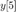 y 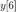
2. Reproduzca el ejemplo 3.9 y egregue el cálculo de 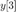 y 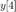
3. Con ayuda de los COMPUTER EXAMPLES C3.3 y C3.4. Elabore un programa cuyos argumentos de entrada sean
- Los coeficientes de la ecuación en diferencias de la salida
- Los coeficientes de la ecuación en diferencias de la entrada
- La función de la entrada
- Las codiciones iniciales necesarias de la salida
- Las condiciones iniciales de la entrada
- El numero de iteraciones a realizar
Puede elegir el formato de adelanto o de atraso para realizar su programa
La salida del programa será
- La tabulación de 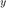 contra 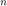, aquí simplemente puede desplegar una matriz de dos columnas
- La gráfica de la entrada y la salida en subplots distintos en la misma figura en formato vertical
El programa se adjunta como apéndice de la práctica.
La practica se prueba con los siguientes problemas:
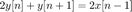
donde 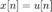, 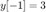, gráfica hasta 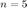
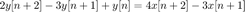
donde 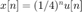, 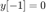, 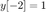, gráfica hasta
4. Reproduzca la sesión M3.2 (sustituya inline por funciones anónimas)
5. Reproduzca la sesión M3.3
6. Con las herramientas de la sesión M3.2 resuleva los problemas:
donde , , gráfica hasta
donde , , , gráfica hasta los resultados deberán ser los mismos que el problema 3
No es necesario incluir conclusiones en esta práctica, si lo considera necesario puede incluir apéndices, no olvide incluir sus referencias.
El códigoe de esta practica se encuentra en el siguiente enlace